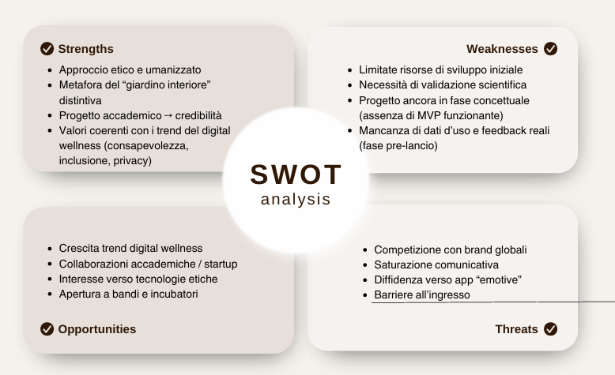
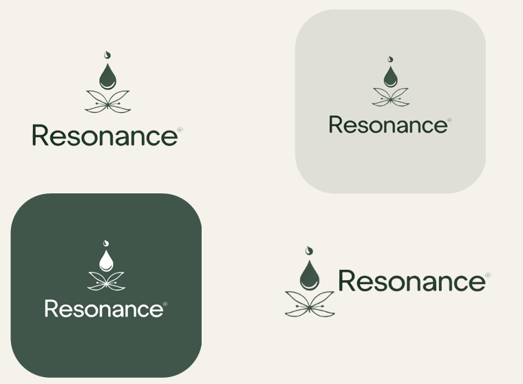
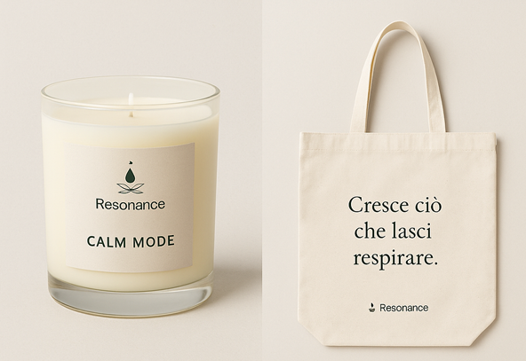
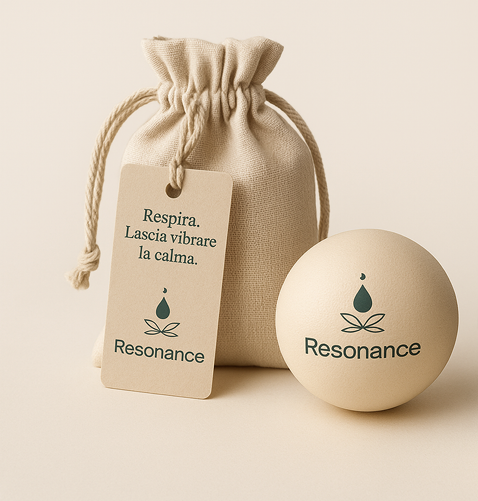
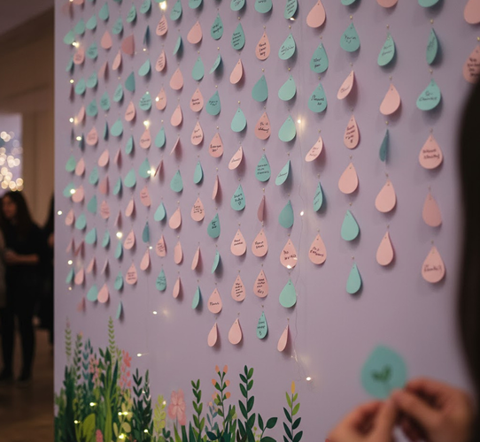

Resonance — una tecnologia che lascia respirare
Un brand etico che trasforma la tecnologia in uno spazio di calma. Ho progettato naming, archetipo, palette, brand voice e un PED cross-channel per un’app di digital wellness. Progetto sviluppato per il corso di Social Media Management & Content Creation proposto da Riverloop, in proseguimento al lavoro di tesi.
Contesto
Il mercato delle app “calmanti” è saturo e spesso basato su meccaniche che generano pressione (notifiche, gamification, paywall aggressivi). Resonance risponde con un posizionamento chiaro: etica, empatia, accessibilità.
Sfida
Differenziarsi dai leader globali (Calm, Headspace) senza ripetere i loro modelli, costruendo fiducia e una relazione non performativa con l’utente.
- Ridurre la frizione emotiva nell’onboarding
- Promuovere rituali brevi e realistici
- Tradurre i valori in contenuti misurabili
Idea forza
“Cresce ciò che lasci respirare.”
Un brand che accompagna, non spinge:
metafora del giardino interiore, voice di Saggio Empatico, visual sensoriale.
Deliverable
- Naming & payoff
- Archetipo “Saggio Empatico”
- Palette, tipografia, brand voice
- Manifesto del brand
- PED IG · TikTok · LinkedIn (3 mesi)
- Concept campagna “Respiriamo insieme”
Metodo
- Analisi settore & competitor (diretti/indiretti)
- Definizione target, journey e messaggi
- Posizionamento & voice system
- Traduzione in format distintivi e KPI
KPI / Metriche
- Awareness: reach, impressions
- Engagement: ER, salvataggi, condivisioni
- Trust: sentiment positivo, menzioni qualificate
Strumenti
- Canva (presentazione, mockup)
- Figma (mockup)
- Capcut (editing montaggio mockup video)
Perché funziona
Dalla poetica alla pratica: il tono empatico diventa PED concreto, con micro-rituali da salvare e condividere. La promessa di calma è esperibile già nel feed.
- Hook non ansiogeni, pause visive, CTA gentili
- UGC guidato: #MyResonanceMoment
- LinkedIn come “voce del Saggio” (credibilità)
Risultati attesi
- +25% crescita community (IG/TikTok)
- +15% ER medio su format rituali
- 3 partnership/mensioni nel vertical digital wellbeing
Estratti dalla presentazione





Slide del progetto
Di seguito l’embed diretto del PDF con tutte le slide del progetto. Puoi scorrere, zoomare o aprire in una nuova scheda.